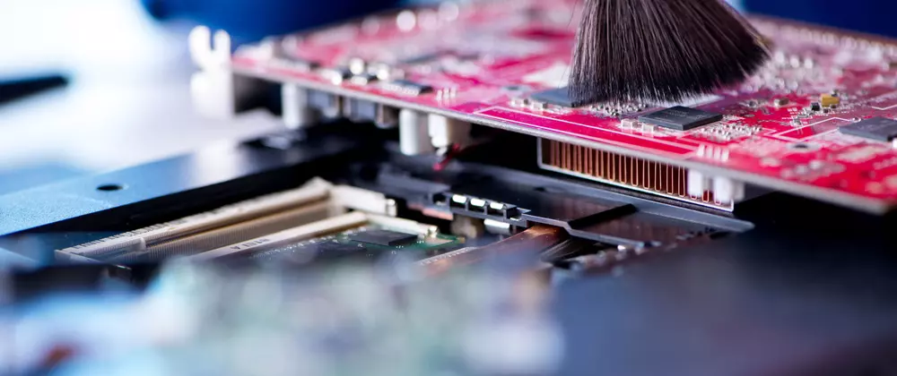

Mantenimiento Preventivo
El mantenimiento preventivo de computadoras consiste en realizar acciones periódicas para limpiar, revisar y optimizar el hardware y software.

Mantenimiento Correctivo
El mantenimiento correctivo se enfoca en reparar fallos o problemas que ya han ocurrido en el equipo.

Mantenimiento Predictivo
El mantenimiento predictivo evalúa el estado de los componentes en tiempo real para prevenir fallos antes de que ocurran.